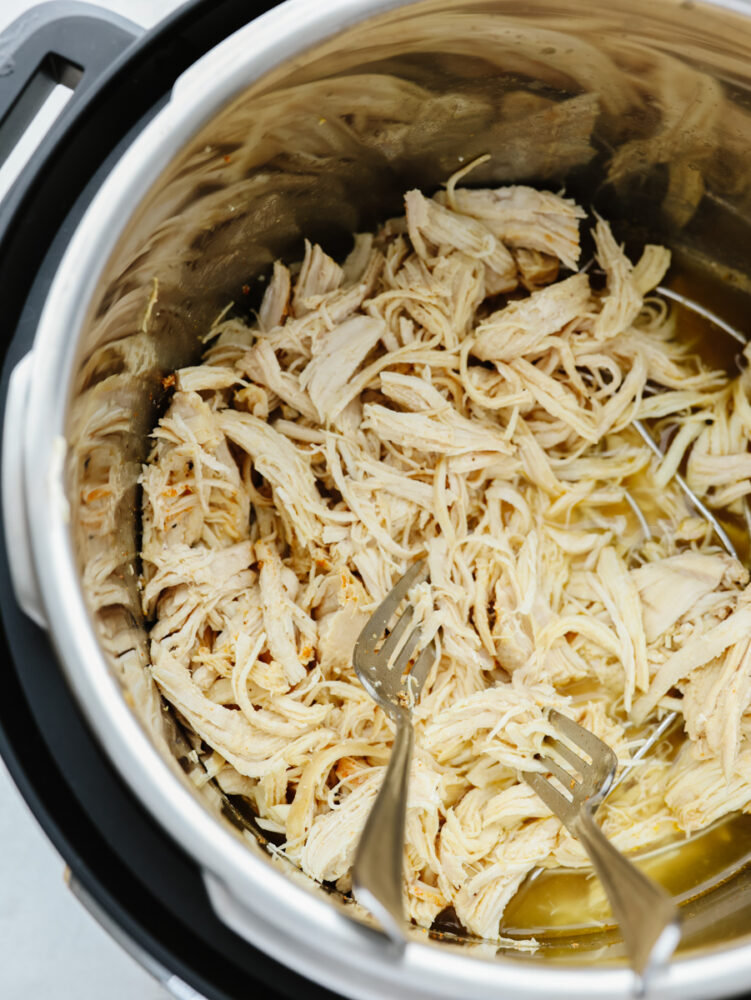
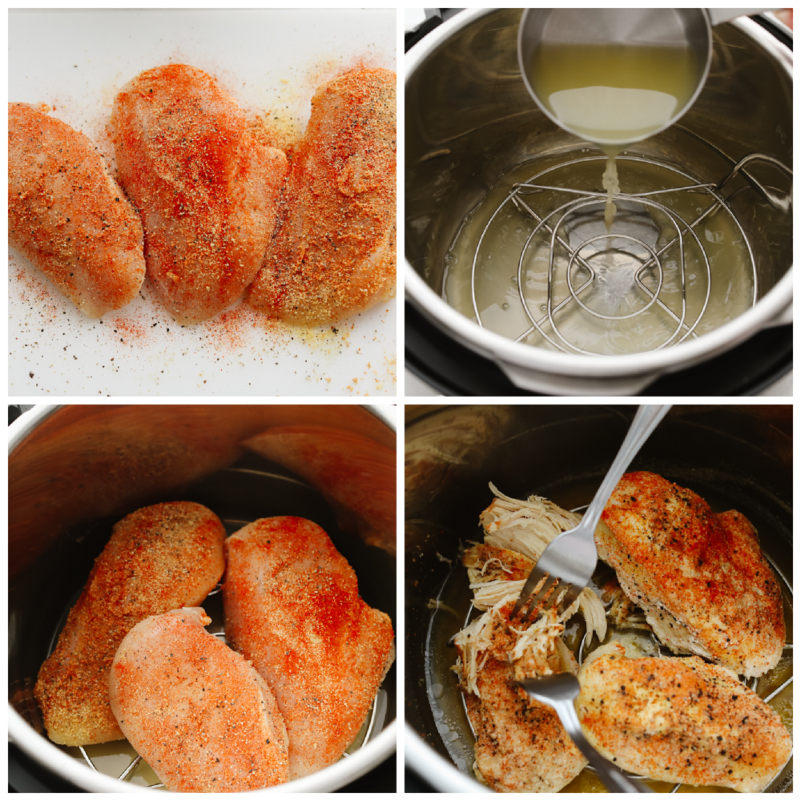

Instant Pot Shredded Chicken

This instant pot shredded chicken is the solution to all of your chicken needs! It’s seasoned, moist, and easy to shred, which makes it the perfect go-to recipe when you need shredded chicken for any dish.
You need to have staple recipes on hand like this one to cover you no matter what your needs are when you are cooking! Use this shredded chicken in these egg rolls, this soup, or in this yummy pasta!
Ingredients
- Chicken Breasts: You can use frozen or fresh for this recipe.
- Garlic Powder: This adds a slight hint of flavor.
- Paprika: The paprika adds a sublte sweetness.
- Salt and Pepper: These season the chicken and enhance it’s flavor.
- Chicken Broth: The Instant Pot always needs at least a cup of liquid in it to work properly. The chicken broth is great because it adds to that delicious and juicy flavor.
Instructions
- Add Rub: Rub the chicken with garlic powder, paprika, salt and pepper
- Put Broth in Instant Pot: Add the chicken broth to the bottom of you instant pot.
- Add Chicken and Cook: Place the chicken into the instant pot. Set the instant pot in the sealing position and cook on high pressure for 10 minutes. (The instant pot will take about 10 minutes to get to the temperature and then the timer will start.
- Instant Release: When the chicken is done, release the pressure and carefully open the lid. Shred the chicken with two forks.

Main Page Source